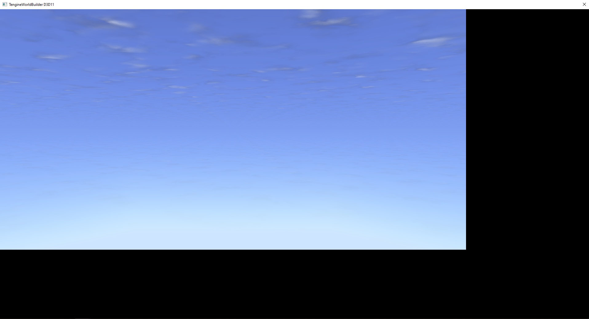
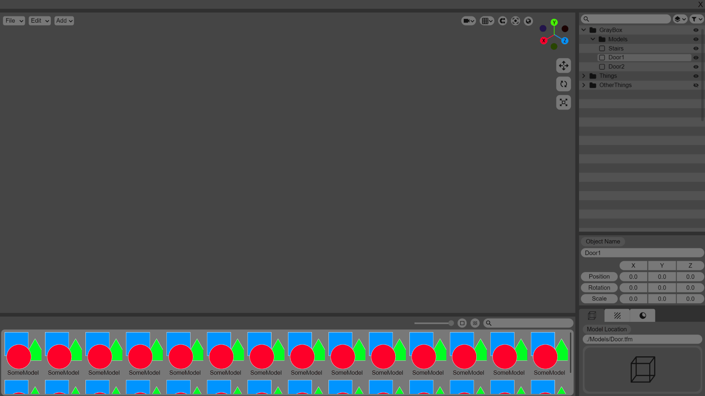
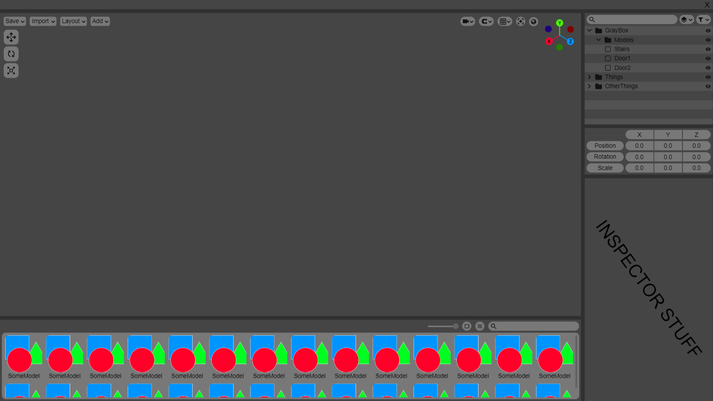
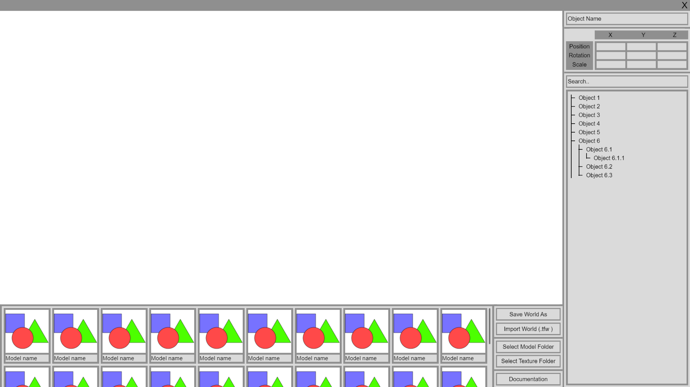

Hi,
I am
Gameplay Engineer - Application Engineer
About me
Hi There! I'm am Cornee Nieuwenhuis as you might have noticed by the homepage. I'm from The Netherlands but have recently moved to Sweden for my current school PSQ. At PSQ i have learned allot abot, not only game programming but also my social skills and how to move futher into this market.
I am an aspiring Application/Software Engineer that wants to make software for designer and artist to make their jobs better even if its just a little bit. To do that i have these skills to make those applications a reality.
i am currently working on a big project. It is a World Builder for PSQs proprietary engine, TenGine. Click here to check it out
My strengths
The idea for this Project came from my first PSQ project(Subaquatic Secrets) when we realised how much time is wasted with implementing new sections to the map in PSQs
proprietary engine(TenGine). Because it has no visual editor, if a designer wanted to make a change to the map they had to either, 1. change the map in a 3d modeling software and
then convert it into a TenGine Map Format. or, 2. Ask an artist to add it and wait till it was done. So to combat this huge waste of time for multiple disciplines we thought of this idea, but due to
time constraints we had to scrap it. But i have recently decided to give it another go and make the editing of maps a piece of cake in TenGine for anyone.
Checkout the progress blog for the world builder

During the first PSQ project(Subaquatic Secrets). The Designers wanted to adjust and change values of the game but didnt want to disturb any of the programmers, They have worked with JSON before during past Unity projects, and so suggested something to edit values in a JSON file. With the project being build in PSQs proprietary engine, there was no easy grab for a JSON reader, so i set out to create V1 of "TenGine JSON Reader". It supported only 3 variables('floats', 'ints', 'strings') which for that project was enough. But with my current project (TenGine World Builder), i needed more types of variables to store. And so V2 was created with full JSON support, to support this project.

During another PSQ game project i got the task of making a tool for music and sound effects. I instantly got ideas of how to implement a system that both the designers and programmers would enjoy to work with and not bother with any settings of the Unity audio system. With the use of a custom GUI in Unity and lots of time i managed to create a good system that the designers can easily add music, sound effects and ambient sounds. Than the programmer can implement sound effects easily with 2 Methods based on if they want it 3D positioned or 2D static. The music and ambient sound are both handle by themself internaly with several option the designer can choose from, from randomized clips to looping clips or even cutting them at a certain second. In my opinion and from my fellow Desiners and Programmers this tool was a succes.
Subaquatic Secrets is a underwater exploration game, where you control a submersible through deep and vast oceans to discover dangers but also marvels of those deep oceans.
The game has tasks that guide the player through the level, but loosely as to emphasize the exploration and non-restrictiveness of the levels.
Heliotrope is a third-person 3D puzzle platformer. While venturing into an imposingly beautiful canyon landscape, the player will be forced to use their cunning,
creativity and coordination to reach their goal of gathering three enchanted gems that will unlock a mysterious tomb. To aid them in their quest,
the player has the ability to conjure magical crystal pillars that grow out from the environment.
These pillars act as multipurpose platforms that can help the player bypass traps, navigate the environment and outsmart puzzles.
I am back on working on my ambitious side project that is TenGine World Builder, freelancing has ended succesfully which means if i have no more assignment to do for school, i can work on the World Build. I'll be posting updates at end (Fridays) of every week, i want a working prototype in now 3 weeks because we have a game project around that time and won't have time to work that well on the TenGine World Builder.
The image doesn't look like much to anyone, that's because visually there isn't much to gloat about during this week. As this is a tool with a GUI i need a UI framework and what better to do that than creating your own! I have a 'Panel' system that can be size with:"Pixels, Percentage and Filling" it can also align its children to all 4 directions and they transform themselfs correctly. This current view consists of 5 panels, The main panel which is a panel to encapsulate the entire screen, 2 for splitting it between left and right, and the final 2 for splitting vertically.
Hopefully next week i can showoff some more visuals as the next week i'll be working on the visual part.
Unfortunatly haven't had time to further develop on it, mainly because it was the summer vacation but also because im doing freelance work now. So basically, the project is currently on hold as i finish my freelance work first.
The last 2 day where very difficult to find progress on, mainly for the reason of making very detailed buttons and information that would interact with the code 1 on 1. I had to think of want i wanted in the application and what was possible in the engine, and that was the main issue that was bothering me. While i have experience with the engine its not enough to say which function are even possible in it, but that didnt detere me.
This is what i call the final design of the application before i publish it to my fellow PSQ students for a feedback run, it feature everything that i can think of and also in a nice package. The GIF below shows all the bells and wistles of this design, from the main design to the dropdowns it shows all the main features i want to show off, until i ofcourse make changes from feedback.
Last 2 days i slowly but finally finished up the main design of the application. Next up ill work on the design of the dropdowns, and finish that up with a google form to get mass feedback from the school on what should be improved/added.
Over the the course of 2 days i have taken the time to fully revamp the design of the application. This time i took more inspiration from modeling software and game editors, and the result is a sleek design with everything you need right infront of you. I'm still not fully done yet as i want to add more detail to get the full picture of the design ready before i start programming it. When im done with the second draft i will showcase it to even more designers and artist to see what they think about it.
Here is the current progress on the second draft of the design. Eventhough i wanted the design only to reflect the layout, I find the current visual aspect of the design very good looking and will try to continue with this style of buttons and layers. Tomorrow i'll hopefully be done with the details of the design and have feedback ready for the third and maybe final draft of the design.
As of today i will be beginning with this project, and it is an ambitious one. This week i want the design and layout of the application to be fully designed, this will be done with lots of inspiration of game editors and modeling software. And ofcourse with lots of feedback from my fellow designers and artist, because they are the people who wil work the most with this software
On the first day i wanted to put something out which will be the core layout of how i want it to look like, then throw to some artist and designers and see what they want added. Personally i should've used more inspiration for the first draft of the design as it lacks inspiration in my opinion.
On the you can see the first draft of TenGine world builder, have to think of a catchier name for it. Like i said earlier it feel like it lacks insipiration, it looks out of date and doesn't have all the necessities that an editor should have
